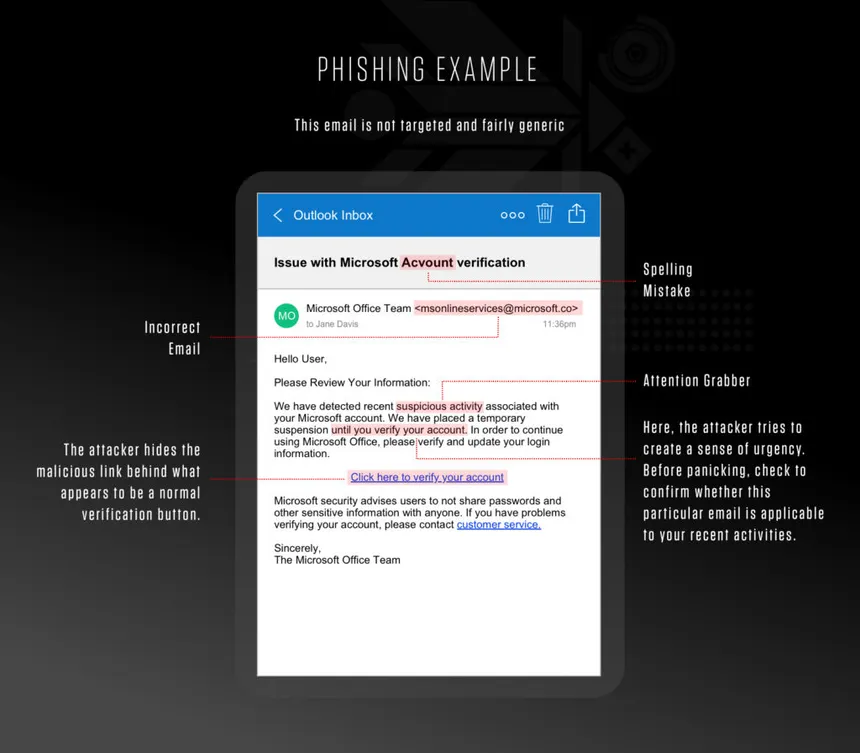
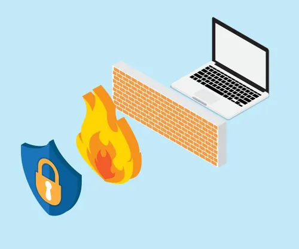

Le minacce informatiche più diffuse non sfruttano falle tecniche complesse:
sfruttano il comportamento umano. Non serve violare un server se basta
convincere una persona a cliccare un link sbagliato.
Phishing

Un messaggio finge di arrivare da un ente affidabile, banca, poste, corriere,
e crea urgenza artificiale per spingere la vittima ad agire senza pensare.
La pagina a cui rimanda è una copia fedele dell'originale: le credenziali inserite
vanno direttamente all'attaccante.
Contromisure: autenticazione a due fattori (2FA), verificare sempre il mittente reale, non cliccare link da messaggi non richiesti.
Malware
Software dannoso che si installa nel dispositivo tramite allegati o download.
Le tipologie principali sono virus, trojan, spyware e ransomware.
Quest'ultimo cifra i file dell'utente e chiede un riscatto per restituirli.
Contromisure: antivirus aggiornato, non aprire allegati sospetti, backup regolari dei dati.
Crittografia e firewall

La crittografia end-to-end garantisce che solo mittente e destinatario possano
leggere un messaggio. I firewall filtrano il traffico di rete bloccando connessioni
non autorizzate. Le VPN cifrano tutta la navigazione e proteggono su reti pubbliche.
La triade CIA
Tutta la sicurezza informatica si fonda su tre pilastri:
Confidentiality (le informazioni sono accessibili solo a chi ne ha diritto),
Integrity (le informazioni non vengono alterate da malintenzionati),
Availability (le informazioni devono essere sempre disponibili e fruibili).